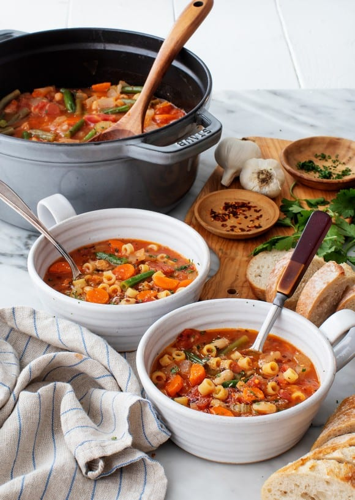

ministroni

description
mini is a very delicious a nutritious meal to have with your family
it takes 30 - 60min to cook and is enough for 5
ingredients
- 2 tablespoon of rosemary
- 1 medium garlic
- 1 onion
- 2 tomato
- five hand full macaroni
- 100gm red lentils
- 40ml oil
steps
- first put the lentils in a boiling water
- put oil on other pan and add the onion
- then when the onion become translucent add garlic(minced) and tomato
- when the lentils become medium cooked add the sauce you just made to it
- add macaroni
- add salt and rosemary
- then cook for at least 20 min
- then serve